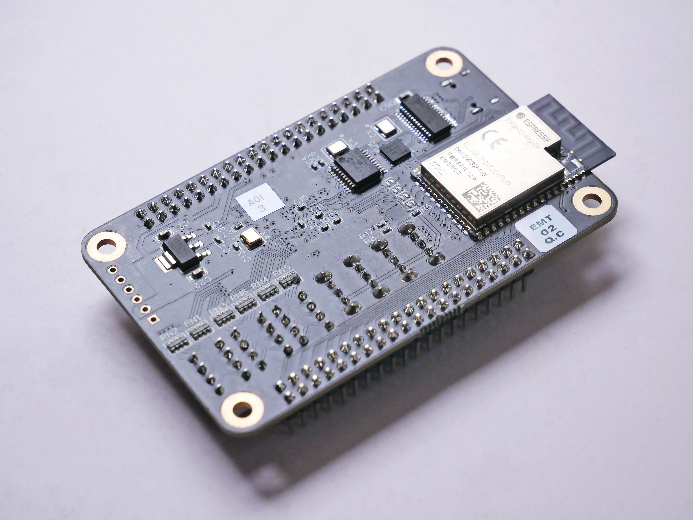
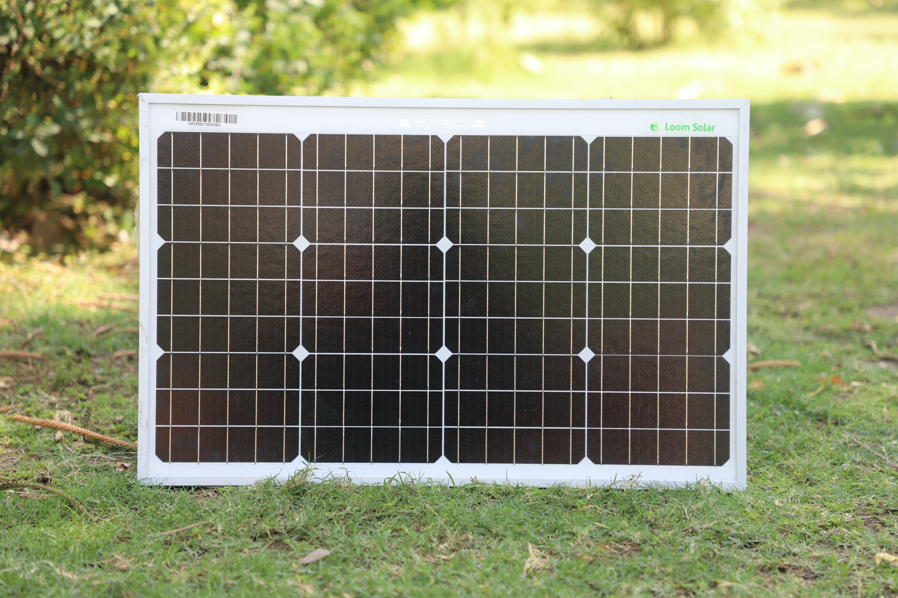
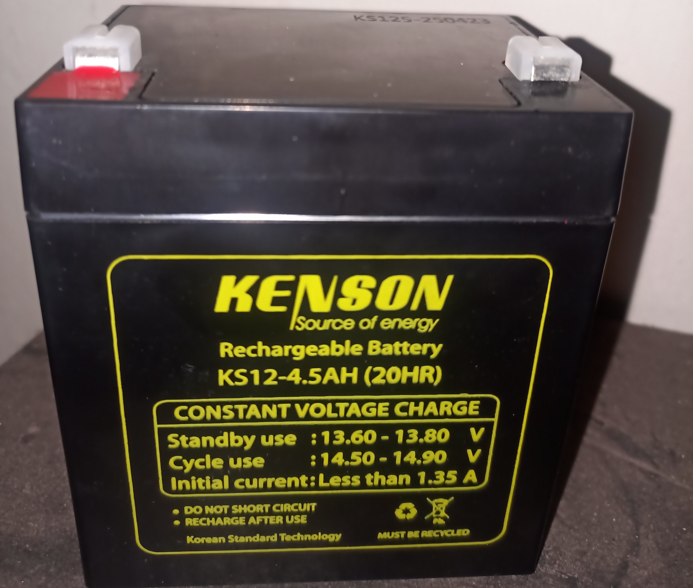
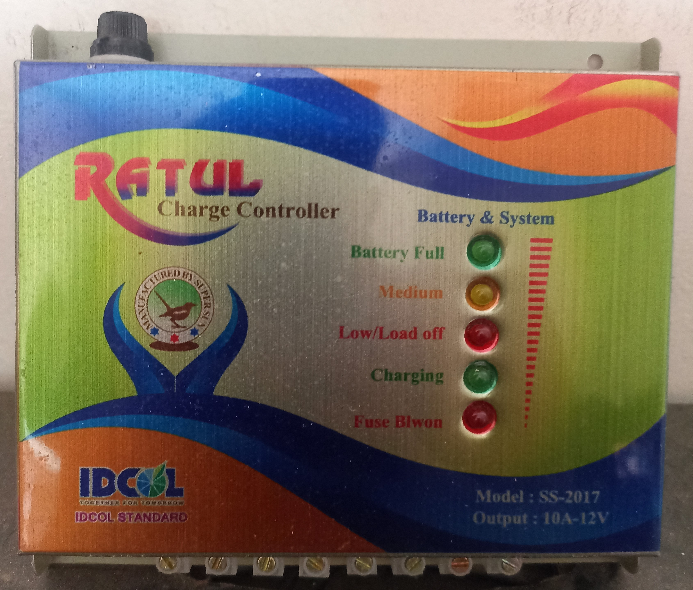
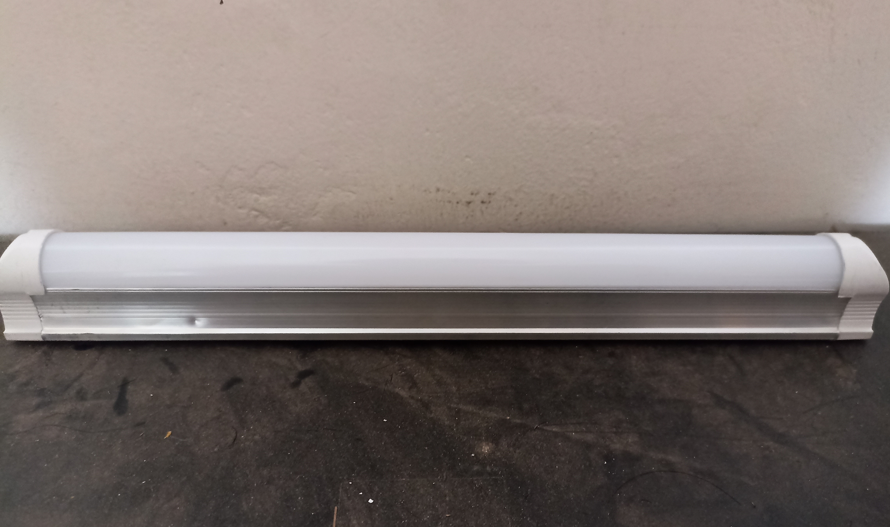
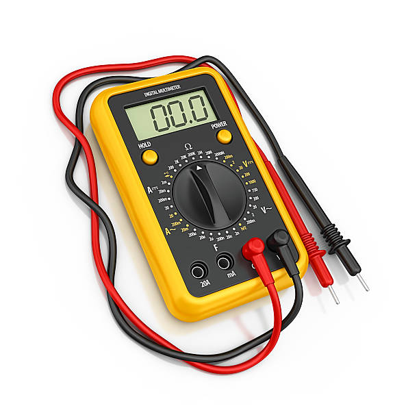

ESP-32
ESP32 is a versatile and powerful Wi-Fi and Bluetooth-enabled microcontroller designed for IoT applications.
Specifications:
- CPU: Dual-core Xtensa 32-bit LX6 microprocessor, operating at up to 240 MHz
- Memory: 520KB SRAM, 448KB ROM, and 4MB Flash memory
- Wi-Fi: 802.11 b/g/n/e/i, supporting WPA/WPA2-PSK and WPA3-SAE security protocols
- Bluetooth: Bluetooth v4.2 and Bluetooth Low Energy (BLE)
- GPIO: 34 programmable GPIO pins
- ADC: 12-bit SAR ADC with up to 18 channels
- DAC: 8-bit DAC with 2 channels
- Interfaces: UART, SPI, I2C, I2S, CAN, Ethernet, SDIO, PWM
- Operating Voltage: 2.2V to 3.6V
- Power Consumption: Low-power modes for energy efficiency
- Operating Temperature: -40°C to +125°C
- Dimensions: Various form factors and module options available
Solar Panel-20 watt
A 20-watt solar panel generates up to 20 watts of electrical power from sunlight.
Specifications:
- Power Output: 20 watts
- Voltage at Maximum Power Point (Vmp): Typically around 17-18 volts
- Current at Maximum Power Point (Imp): Typically around 1.1-1.2 amps
- Open-Circuit Voltage (Voc): Typically around 21-22 volts
- Short-Circuit Current (Isc): Typically around 1.2-1.3 amps
- Dimensions: Varies based on the specific model (e.g., approximately 40-50 inches in height and 20-25 inches in width)
- Weight: Approximately 2-3 kilograms
- Efficiency: Generally ranges from 15% to 20%
- Material: Typically made of monocrystalline, polycrystalline, or thin-film solar cells
- Maximum System Voltage: Typically rated for 600-1000 volts
- Operating Temperature: -40°C to +85°C
Lead Acid 12V and 4.5AH/20HR Battery
Lead Acid 12V 4.5AH/20HR battery is a rechargeable battery commonly used in various applications, providing 12 volts of power with a capacity of 4.5 ampere-hours when discharged over 20 hours.
Specifications:
- Voltage: 12 volts
- Capacity: 4.5 ampere-hours (AH) when discharged over 20 hours
- Chemistry: Lead Acid
- Size and Weight: Typically compact and portable, weight varies depending on the specific model.
- Charging Time: Charging time may vary but generally requires several hours to reach full charge.
- Cycle Life: Typically around 300-500 charge-discharge cycles depending on usage and maintenance.
- Application: Commonly used in small-scale applications like UPS systems, solar power storage, emergency lighting, security systems, and more.
12V DC Fan

A 12V DC fan is a low-voltage, direct current-powered device that provides air circulation and cooling in electronic systems and small-scale applications.
Specifications:
- Voltage: 12V DC
- Speed: Variable speed options, typically measured in rotations per minute (RPM).
- Airflow: Measured in cubic feet per minute (CFM) or cubic meters per hour (m³/h), indicating the amount of air moved.
- Noise Level: Usually expressed in decibels (dB), indicating the fan's operating noise.
- Bearing Type: Common types include sleeve, ball, and fluid dynamic bearings.
- Power Consumption: Expressed in watts (W) or amperes (A).
- Connector Type: Often comes with a 2-pin or 3-pin connector for easy connection to power supply.
- Frame Material: Usually made of plastic or metal.
- Design: Various designs available, including standard, LED-lit, and high-performance options.
Solar controler
A Solar Controller is an electronic device that regulates and optimizes the charging and discharging of batteries in a solar power system.
Specifications:
- Rated Current: 10A
- Rated Voltage: 12V
- Maximum PV Input Voltage: 50V
- Charging Algorithm: PWM (Pulse Width Modulation)
- Battery Types: Lead-acid, Gel, AGM, and Lithium
- Load Output: 12V DC
- Load Current: Up to 10A
- Maximum Efficiency: 98%
- Operating Temperature: -20°C to 55°C
- Warranty: 2 years.
LED Light
A self-contained unit that harnesses solar energy during the day to power an integrated LED light source for nighttime illumination.
Specifications:
- LED Light: Integrated LED light for illumination
- Power Output: Provides DC power output for LED light (e.g., 12V)
- Control Functions: Includes charge controller and light control for efficient energy management
- Wattage: Suitable for powering LED lights with a specific wattage (e.g., 10W)
- Protection: Overcharge and over-discharge protection for battery longevity
- Durability: Weather-resistant and designed for outdoor use
- Mounting: Easy mounting options for installation on poles, walls, or other structures
- Automatic Operation: Automatically turns on/off the LED light based on ambient light conditions.
Digital Ammeter and Voltmeter
Digital Ammeter and Voltmeter is an electronic measuring instrument used to display current (in amperes) and voltage (in volts) readings accurately.
Specifications:
- Measurement Range: Wide range of current and voltage measurements, typically in amperes (A) and volts (V).
- Accuracy: High accuracy for precise measurements.
- Display: Digital display for clear and easy-to-read readings.
- Resolution: Fine resolution for displaying small changes in current and voltage.
- Auto-ranging: Automatic range selection for convenience and accuracy.
- Sampling Rate: Fast sampling rate for real-time measurements.
- Power Supply: Usually powered by batteries or external power source.
- Input Impedance: High input impedance to minimize the load on the circuit being measured.
- Overload Protection: Built-in protection to prevent damage from excessive current or voltage.
- Calibration: Some models may offer calibration options for calibration accuracy.